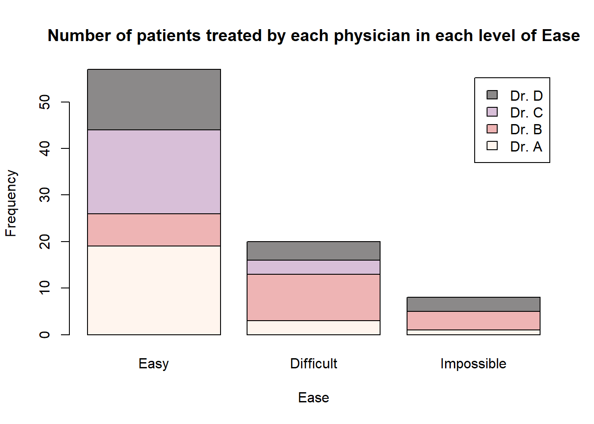
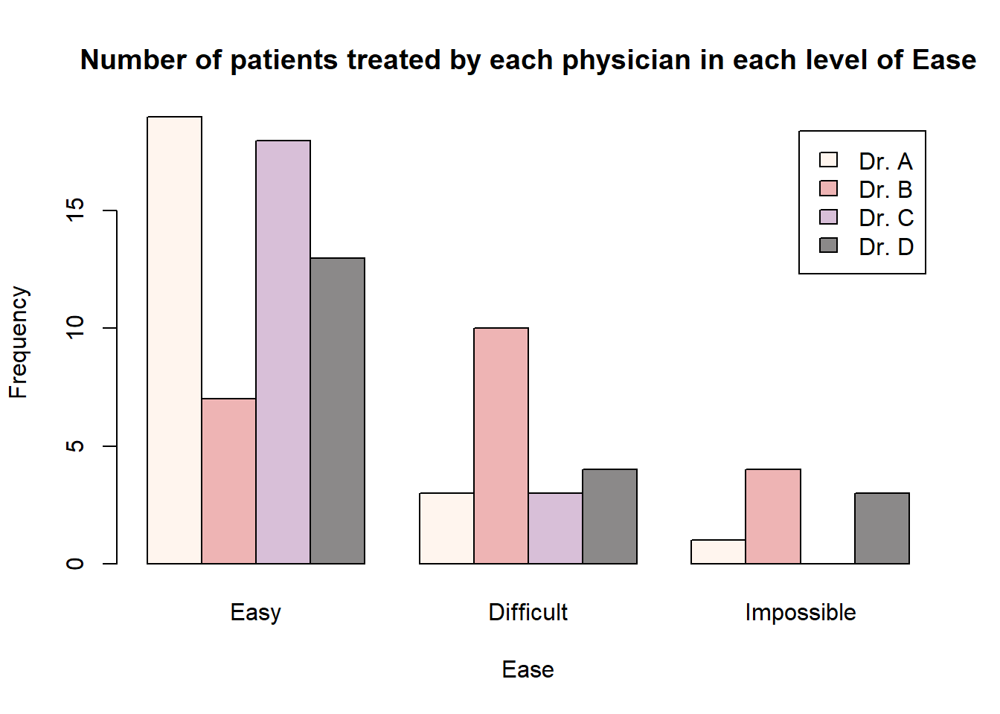
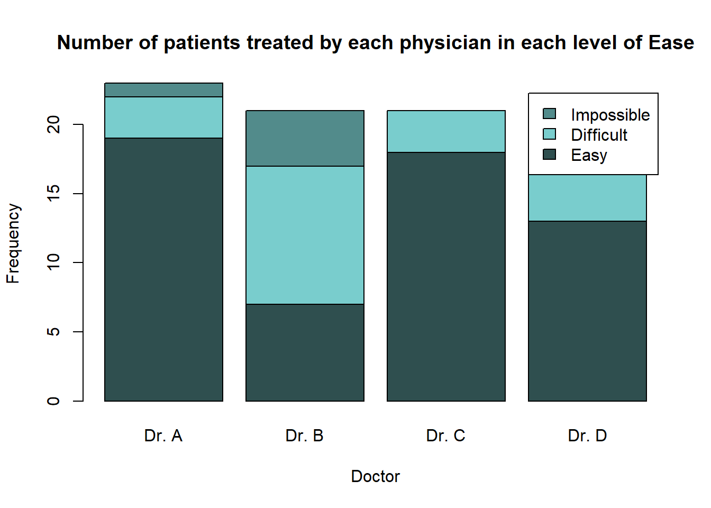
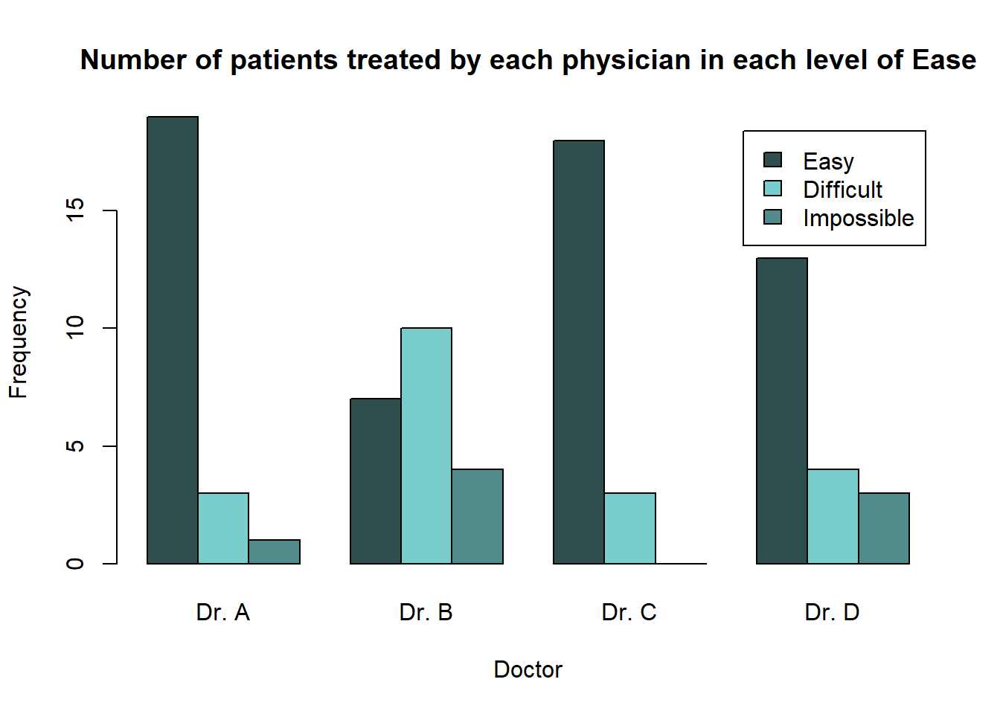
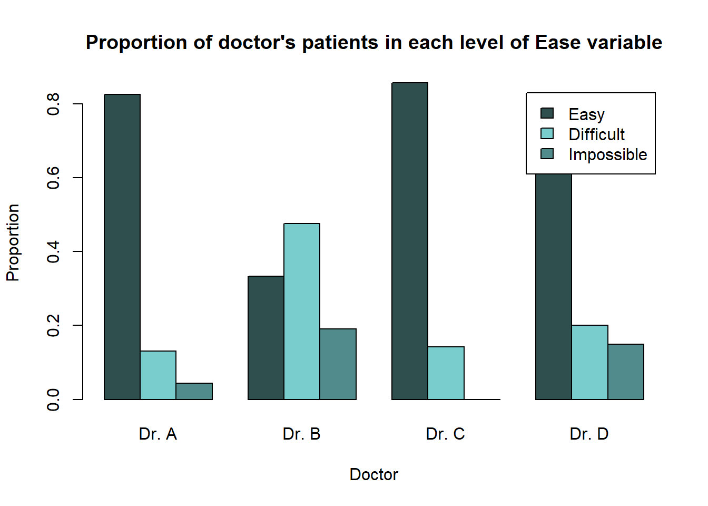

3 Bivariate Categorical Data
In Section 1, we have already looked at different ways to visualise information about one categorical (or qualitative) variable. Because only one variable was considered, this is called univariate data.
We will now turn our attention to bivariate categorical data. This means we will look at ways to visualise information about two categorical variables at the same time. We can expand upon some of the methods we have already learned to allow two categorical variables to be considered.
Some of the methods to visualise bivariate categorical data include
- tables
- barplots
3.1 Two-Way Contingency Tables
In Section 1.1 we looked at the use of the table() function to create frequency tables for one categorical variable. We can expand upon the use of this function so that frequency tables of two categorical variables can be created. These are known as two-way contingency tables.
In order to create a two-way contingency table, simply provide the second categorical variable you wish to use as an additional argument.
The data set EPIDURAL contains a variable "doctor" which indicates the physician (Dr. A, Dr. B, Dr. C or Dr. D) who administered the epidural anesthesia. Table 3.1 shows the number of patients who fall into each level of the "doctor" and "ease" variables.
| Easy | Difficult | Impossible | |
|---|---|---|---|
| Dr. A | 19 | 3 | 1 |
| Dr. B | 7 | 10 | 4 |
| Dr. C | 18 | 3 | 0 |
| Dr. D | 13 | 4 | 3 |
We can recreate Table 3.1 in R using the following code.
Easy Difficult Impossible
Dr. A 19 3 1
Dr. B 7 10 4
Dr. C 18 3 0
Dr. D 13 4 3Barplots are a useful tool to present the information from a two-way contingency table graphically. For example, we can produce a barplot, which shows the same counts as in Table 3.1, using the following code.
barplot(height = epi_tab,
legend.text = TRUE,
col = c("lightblue2", "lightsalmon", "khaki1", "plum"),
main = "Number of patients treated by each physician in each level of Ease")
This code uses the barplot() function introduced in Section 1.2 and provides the two-way contingency table epi_tab to the argument height =. This means that all the values in this table will be used to construct the height of the bars. Because the bars for each doctor are on top of each other, this is known as a "stacked" barplot.
The argument legend.text = TRUE has also been included so that a legend, indicating the different physicians, is included in the plot.
If we instead wanted to produce a barplot where there is a separate bar for each doctor within each level of the "ease" variable, then we need to include the argument beside = TRUE.
barplot(height = epi_tab,
legend.text = TRUE,
beside = TRUE,
col = c("lightblue2", "lightsalmon", "khaki1", "plum"),
main = "Number of patients treated by each physician in each level of Ease")
Another option for presenting this information would be to create a barplot where the different doctors are along the x-axis and the levels of "ease" are used to create the individual bars. In order to do this, we need to transpose the two-way contingency table that is given to the height = argument in the barplot() function.
Transposing a table can easily be achieved using the function t(). The only argument needed is the table you wish to transpose.
Dr. A Dr. B Dr. C Dr. D
Easy 19 7 18 13
Difficult 3 10 3 4
Impossible 1 4 0 3We can then create the following barplots using the transposed epi_tab table.
barplot(height = t(epi_tab),
legend.text = TRUE,
col = c("darkseagreen2", "peachpuff", "darkslategray3"),
main = "Number of patients treated by each physician in each level of Ease")
barplot(height = t(epi_tab),
legend.text = TRUE,
beside = TRUE,
col = c("darkseagreen2", "peachpuff", "darkslategray3"),
main = "Number of patients treated by each physician in each level of Ease")
It is often better to present relationships using proportions, rather than counts. In order to calculate that proportions (either out of the total number of observations, row totals or column totals) from a two-way contingency table, we can use the function prop.table(). This function was introduced in Lab 3.
To create a barplot which shows the proportion of patients who were in each level of the "ease" variable out of the total number of patients seen by a given doctor, we would first need to calculate these proportions in epi_tab. This can be done by using the argument margin = 1 within the prop.table() function.
Easy Difficult Impossible
Dr. A 0.82608696 0.13043478 0.04347826
Dr. B 0.33333333 0.47619048 0.19047619
Dr. C 0.85714286 0.14285714 0.00000000
Dr. D 0.65000000 0.20000000 0.15000000Now we can see, for example, that Dr. A found it easy to feel the bone landmarks of 82.6% of their patients, found it difficult in 13.0% of their patients and impossible in 4.3% of their patients.
We can graphically present these proportions for all doctors in a barplot using the following code. Because the proportions are calculated out of the total number of patients each doctor has seen, it makes sense to plot the physicians along the x-axis.
barplot(height = t(epi_prop_tab),
legend.text = TRUE,
beside = TRUE,
col = c("darkseagreen2", "peachpuff", "darkslategray3"),
main = "Proportion of doctor's patients in each level of Ease variable")